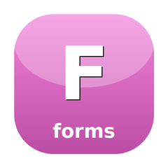

🍬 CandyForms
Interactive forms + foundation form primitives

Form engine built on SugarCraft — multi-page Group wizards, six themes, per-field validators, conditional skip predicates. The form is itself a Model — drop it into a Program. Also the foundation for the raw form / input primitives that sugar-bits re-exports, folded together with the interactive form library (port of charmbracelet/huh) into a single standalone dependency.
Install
composer require sugarcraft/candy-formsQuickstart
use SugarCraft\Forms\Form;
use SugarCraft\Forms\Field\{Input, Confirm, Select, Note};
use SugarCraft\Forms\Validator\{Required, Email, MinLength};
use SugarCraft\Fuzzy\Matcher\SmithWatermanMatcher;
$form = Form::new(
Note::new('welcome')
->withTitle('Onboarding')
->withDescription('A few quick questions.'),
Input::new('name')
->withTitle('Your name?')
->withPlaceholder('Ada Lovelace')
->withValidator(new Required())
->withValidator(new MinLength(2)),
Input::new('email')
->withTitle('Email address')
->withPlaceholder('you@example.com')
->withValidator(new Required())
->withValidator(new Email()),
Select::new('lang')
->withTitle('Favorite language?')
->withOptions('PHP', 'Go', 'Rust', 'Python')
->withFuzzySuggestions(['PHP', 'Go', 'Rust', 'Python', 'JavaScript', 'TypeScript']),
);
// $form is a SugarCraft Model — drop it into a Program.
// Async suggestions:
$form = Form::new(
Input::new('repo')
->withTitle('Repository')
->withAsyncSuggestions(fn($q) => fetchRepos($q), 150),
);
// Fuzzy scoring — candy-fuzzy, the engine behind withFuzzySuggestions():
$matcher = SmithWatermanMatcher::new();
$score = $matcher->score('js', 'JavaScript'); // 3
$best = $matcher->matchAll('py', ['Python', 'PHP', 'Ruby'])[0]; // MatchResult: Python, score 11What's in the box
Input primitivesTextInput, TextArea, ItemList, Viewport, FilePicker, Cursor, Scrollbar, Spinner.
Form engineField interface + Field{Input, Text, Confirm, Select, MultiSelect, Note, FilePicker, Date, Slider, Color}, Form, Group, KeyMap, Theme.
Hidden fields & groups
Form honours Field::isHidden() in values, errors, validation, navigation, submit and view; focus never rests on a hidden field and fully hidden groups are skipped. A Group::withHideFunc() predicate sees the same view values() returns — the visible fields of every visible earlier group.Bounded editingTextInput / TextArea clip a paste or insert to the remaining
charLimit budget (newlines count), and TextArea pans to keep the cursor row visible.Validation
->withValidate(fn($v) => …) — return null to pass, error string to block submit. Five built-in validators: Required, Email, MinLength, MaxLength, Pattern. Chain multiple with ->withValidator(new Validator()). Cross-field validation via Form::validateAll(): array<string,string> after submit. Enable error summary with Form::withErrorSummary(true) to show all errors at once.Fuzzy suggestions
->withFuzzySuggestions([...]) on Input and Select — Smith-Waterman scoring ranks candidates by match quality (extracted to candy-fuzzy). Use candy-fuzzy’s SmithWatermanMatcher directly for programmatic scoring: $matcher->score($query, $candidate).Async suggestions
->withAsyncSuggestions(callable $fetcher, int $debounceMs = 150) on Input and Select — fetches suggestions asynchronously with a configurable debounce delay. The SuggestionsReadyMsg message is dispatched via the event loop when results are available.MultiSelect vim keys
j / k navigate, Space toggles selection — mirrors vim-style keybindings.Select enum mode
Select::withEnum(\BackedEnum::class) coerces the selected value to the given enum type automatically.Multi-page Groups
Group::new() stacks Forms into a wizard. Conditional ->withSkipFn().Six themesDefault, charm, dracula, base16, catppuccin, pink. Custom error summary slot via
Theme::$errorSummary.Tab navTab / Shift+Tab between fields, Enter on the last submits, Esc / Ctrl+C aborts.
Submit hook
$form->getValue('name') after the Program ends — typed value retrieval.Form-level KeyMap
Form::keyMap($keymap) rebinds Next / Prev / Submit / Quit per form.ActionSpinnerFork-isolated spinner action (
ActionSpinner) with a bounded runtime ceiling — the long-running spin primitive folded in from the retired prompt façade.Use it for
- Declarative form wizards — multi-page Groups, validation, themes, fuzzy / async suggestions, out of the box.
- Standalone form primitives — when you want the raw inputs without sugar-bits overhead.
- Custom form engines — build your own form system on top of the Field interface.
- Spinner and progress components — standalone spinner and the fork-safe ActionSpinner live here, previously in sugar-bits / the retired prompt façade.
Source & demos
- Source on GitHub
- Full README
- Runnable examples
- Originally inspired by huh (Go); SugarCraft is developed as a native PHP project.
API
| Class | Method | Description |
|---|---|---|
| Form | new(Field ...$fields) | Create a single-group form with fields |
| Form | groups(Group ...$groups) | Create a multi-page form |
| Form | values() / getString() / getInt() / getBool() / getArray() | Submitted values of visible fields; hidden fields and hidden groups are excluded |
| Form | getValue(name) | Get field value after submit |
| Form | validateAll() | Run all field validators, return [fieldKey => errorMessage] |
| Form | withErrorSummary(bool) | Show all errors at once on submit failure |
| Form | keyMap($keymap) | Rebind Next / Prev / Submit / Quit per form |
| Group | new(Field ...$fields) / withHideFunc(?\Closure(array): bool) | A page of fields; the predicate receives the visible values collected before this group |
| Field\Input | new(string) | Create a text input field |
| Field\Input | withFuzzySuggestions(list) | Filter suggestions by fuzzy match score |
| Field\Input | withAsyncSuggestions(callable, int = 150) | Async suggestions with debounce |
| Field\Confirm | new(string) | Create a confirmation field |
| Field\Select | new(string)->withOptions(string ...) | Create a select field |
| Field\Select | withFuzzySuggestions(list) | Filter options by fuzzy match score |
| Field\Select | withAsyncSuggestions(callable, int = 150) | Async suggestions with debounce |
| Field\Select | withEnum(BackedEnum::class) | Coerce selected value to enum type |
| Field\MultiSelect | new(name) | Create multi-select field (j/k nav, Space toggle) |
| Field\Note | new(content) | Create note field |
| Validator\Required | validate(mixed) | Check value is not empty |
| Validator\Email | validate(mixed) | Check valid email format |
| Spinner\Spinner | new(?Style) | Create a spinner with style |
| ActionSpinner | new() / run() | Fork-isolated spinner action with a bounded runtime ceiling |
| Fuzzy\FuzzyMatcher (deprecated shim) | score(query, candidate) | Smith-Waterman alignment score (int) — delegates to candy-fuzzy |
| Fuzzy\FuzzyMatcher (deprecated shim) | match(query, candidates): list<[string, int]> | Legacy ranking shape — for ?MatchResult / matchAll() use candy-fuzzy's SmithWatermanMatcher directly |
| Theme | errorSummary | Renderable slot for custom error summary display |